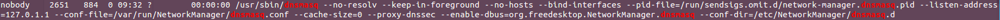

dig +trace抓包分析：
dig +trace [hostname]命令从根服务器开始追踪一个域名的解析过程,下面结合命令输出以及wireshark抓包分析执行dig +trace命令后究竟发生了哪些事情。
dig +trace www.baidu.com 抓包结果：
以www.baidu.com为例：
|
|
从dig +trace的输出结果来看，整个过程可以被分成四个部分：
(1)从本地服务dnsmasq(127.0.1.1:53)得到13台根域名服务器的地址，耗时88ms
(2)从其中一台根域名服务器(a.root-servers.net)得到13台通用顶级域名.com服务器的地址，耗时263ms
(3)从其中一台.com域名服务器(m.gtld-servers.net)得到5台二级域名baidu.com服务器地址，耗时235ms
(4)从其中一台baidu.com域名服务器(ns3.baidu.com)得知所查域名www.baidu.com的别名为www.a.shifen.com，进而得知5台三级域名a.shifen.com服务器的地址，耗时67ms
下面通过wireshark对上述过程的抓包结果，来分析究竟发生了什么。
首先看第一阶段：
dnsmasq是linux本地的一个提供dns服务的进程，即local dns。如果ps -ef | grep dnsmasq的话会看到–listen-address=127.0.1.1，再用netstat查看端口会看到53端口，这说明dnsmasq进程监听本地回环地址127.0.1.1的53号端口

如下图所示，10.242.52.179是本机ip。为了得到www.baidu.com的ip地址，我们首先需要知道根域名服务器的地址，因此dnsmasq进程对外询问局域网内的DNS服务器，在这里是10.246.3.3[1-4]；我们分别向四台DNS服务器发送了一条DNS query，询问
第一阶段结束。

再看第二阶段：
拿到了13个根域名服务器的ip地址后，我们选择了其中一个：a.root-servers.net(192.55.83.30)，下面我们向这台服务器询问com顶级域名服务器的地址。

再看第三阶段：
我们选择了m.gtld-servers.net顶级域名服务器，对应ip为192.55.83.30，向它询问baidu.com域名服务器的地址。

最后看第四阶段：
我们选择了ns3.baidu.com域名服务器，对应ip为220.181.37.10，向他询问www.baidu.com的ip地址。然而，域名服务器在它的dns记录表中发现，www.baidu.com对应的记录是一条CNAME记录，其CNAME别名为www.a.shifen.com

与此同时，ns3.baidu.com这台域名服务器还告诉我们a.shifen.com域名服务器有5个，分别是ns[1-5].a.shifen.com，这样就不用我们拿着www.a.shifen.com再从根域名服务器、.com服务器、.shifen.com费尽周折地查找了。

最后，我们向ns[1-5].a.shifen.com中的任意一台机器询问www.a.shifen.com的ip地址，得到的也就是www.baidu.com的ip地址了。
CNAME和A记录：
A(Address)记录把主机名或域名映射到IP地址，实现了域名到IP的关联
CNAME(Canonical NAME)是别名记录，就是将一个或多个主机名或域名映射到另一个域名
举个例子：有一台主机名为host.example.com的服务器，其对外ip为10.110.72.29；服务器提供了门户网站和邮箱两个服务，我们希望用户通过地址www.example.com和mail.example.com分别访问两个服务，那么DNS应该这样记录：
|
|
这样的话，www和mail服务其实都是指向了同一个ip，当主机的ip地址变更时，只需更改A记录即可。
jdk中DNS解析过程：
java的DNS解析过程在java.net包下的InetAddress类中完成，核心代码如下：
|
|
拿到一个host，首先会调用getCachedAddresses方法查缓存（缓存由LinkedHashMap实现），命中缓存则返回地址，未命中则调用getAddressesFromNameService方法查询name server。在查询name server之前，该方法会检查lookupTable（一个HashMap）。如果table中已经存在key为hostname的记录，说明此时另外一个线程正在对该host进行查询，那么当前线程就会等待，直到host记录被删除，也就是说另一个线程完成了对host的查询并更新了缓存，正常情况下此时缓存中已经有该条host的记录了，因此当前线程就没有必要自己查询name server，从缓存中取即可，但是特殊情况下无法命中缓存，那么当前线程需要将键值对
上面提到，java查询DNS后会有缓存，具体缓存多久的时间与jvm security policy的配置相关。通过下面两个参数可以控制DNS解析结果的缓存时间：
networkaddress.cache.ttl（default: -1）# 设置缓存解析成功的时间
Specified in java.security to indicate the caching policy for successful name lookups from the name service. The value is specified as as integer to indicate the number of seconds to cache the successful lookup.
A value of -1 indicates cache forever. The default behavior is to cache forever when a security manager is installed, and to cache for an implementation specific period of time, when a security manager is not installed.
networkaddress.cache.negative.ttl (default: 10) # 设置缓存解析失败的时间
Indicates the caching policy for un-successful name lookups from the name service. The value is specified as as integer to indicate the number of seconds to cache the failure for un-successful lookups. A value of 0 indicates never cache. A value of -1 indicates cache forever.
以上两个参数可在${java.home}/jre/lib/security/java.security中配置，或者也可以在代码中进行配置：
|
|